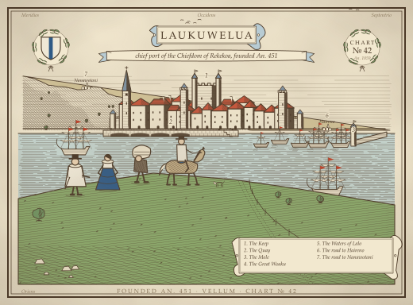
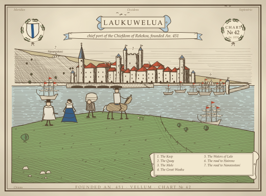

Issue #747 library spike: E's capital plate, today's lettering beside glyph outlines from two period faces, and roughjs
antique, hand-coloured

Today's E (Iowan stack as , device fonts)E lettered in IM Fell DW Pica (opentype.js outlines)E lettered in Cormorant Garamond + SC (opentype.js outlines)

E with roughjs wobble on every stroke (fails the guard)